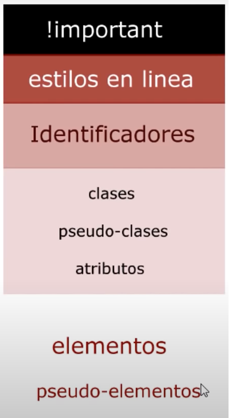

La especificidad es una logica que viene a solucionar los problmeas y para lidiar con los conflictos que puede ocasionar trabajar con distintos tipos de selectores, debido a la tabla de herarquia, o importancia, de los selectores.
CSS son las siglas en ingles de Cascading Style Sheets, en español Hojas de estilo cascada, y este nombre no lo tiene solo porque si, este nombre significa que CSS siempre va a leer los archivos de arriba hacia abajo, como una casacada. Esto significa que lo que esta de ultimo en una sentencia de CSS siempre va a tener mayor prioridad que lo que esta al final. Si al principio ponemos un color, y al final otro, siempre el color seleccionado será el ultimo, y así es con todo en CSS.

La "cascada" solo funciona cuando todos los selectores son del mismo tipo de selector, de lo contrario, actuara la tabla de herarquia y dependiendo de la posición en la herarquia del tipo de selector que se este usando, entonces se aplicara un estilo u otro.
Estilos en linea
Este es uno de los tipos de selectores con más poder, ya que esta justo por debajo del más poderoso, que es el !important. Este tipo de selector no lo vimos en el capitulo anterior, pero vamos a explicarlo aquí. Es simplemente añadir los estilos en la propia etiqueta, desde el archivo HTML y no desde un archivo externo, como usualmente hacemos. Por eso, no cuenta del todo como un tipo de selector, porque no estamos seleccionando nada, ya la selección esta hecha. Veamos un ejemplo:
<h2 style="color:red" > Titulo </h2>
Obviamente, el titulo saldría de color rojo.
!important
Dentro de la herarquia de la especificidad de CSS, !important es el más importante. Esta sentencia no entiende de cascadas ni nada, lo que se coloque con !important se hará siempre, y siempre será lo que tenga mayor prioridad. Para usar !important, simplemente debemos añadirlo al lador de una propiedad que estemos modificando dentro de una sentencia de CSS, la cual puede ser con cualquier selector. Ejemplo:
h2{
color:red; !important
}
de esta forma, la propiedad color:red del objeto h2 será siempre roja, no importa nada, ni la posición, ni la cascada, ni si ya se ha cambiado en otra parte.